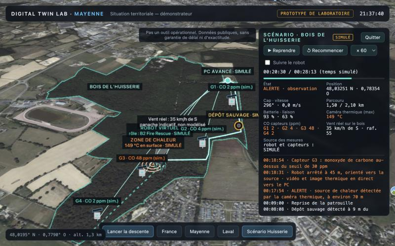
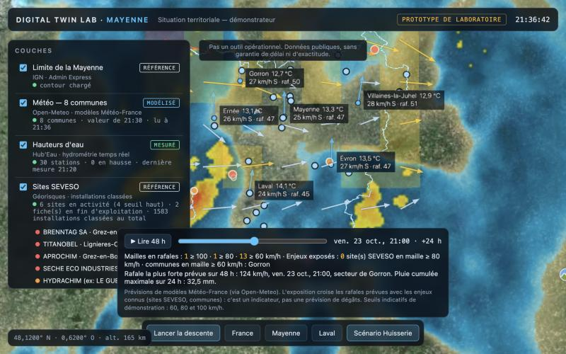
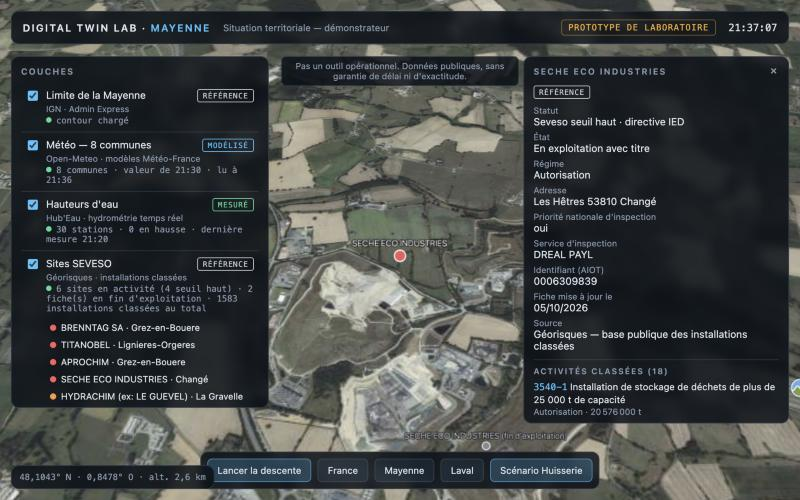
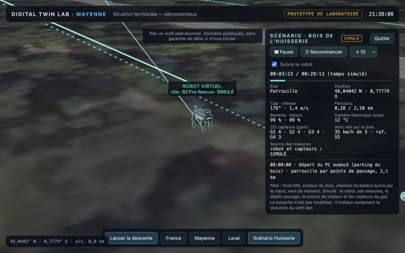

L.O.R.V.
Vue de situation
Le logiciel de télémétrie en temps réel du laboratoire
Projet présenté au SDIS de la Mayenne · octobre 2026
Il rassemble sur une même carte 3D ce que mesurent les capteurs du terrain, ce que voit un robot et ce que publient les services publics. Chaque information arrive avec son heure et sa source. Le poste de commandement voit la situation au lieu de l'imaginer.
- 6sources publiques interrogées en direct, sans abonnement
- 48 hde vent et de rafales prévus, heure par heure
- 2,1 kmde patrouille simulée sur les vrais chemins du bois de l'Huisserie
Démonstrateur de laboratoire, pas un outil opérationnel. Les données publiques sont affichées sans garantie de délai ni d'exactitude.

Le logiciel en vidéo
2 min 24 · filmée dans le prototype, le 22 octobre 2026
Ouvrez le prototype : globe, Mayenne, couches de données publiques en direct, prévisions de vent sur 48 heures et scénario du bois de l'Huisserie. Sur ordinateur de préférence ; la carte 3D se charge en quelques secondes.
La télémétrie, en clair
Mesurer loin, voir tout de suite
Télémétrie veut dire mesure à distance. Un capteur mesure, un réseau transmet, le logiciel range et affiche. Pour le commandement, trois choses comptent : que la chaîne soit courte, que chaque valeur soit datée, et que l'on sache toujours d'où elle vient.
Mesurer
Un capteur relève une grandeur physique : hauteur d'une rivière, vent, température vue par une caméra thermique, monoxyde de carbone.
Station Hub'Eau sur la Mayenne : hauteur d'eau, en millimètres.
Transmettre
La mesure part par le réseau adapté : Internet pour les stations publiques, LoRaWAN pour des capteurs en forêt, radio ou 4G pour un robot.
LoRaWAN : longue portée, faible débit, faible consommation.
Dater et qualifier
Chaque valeur garde son heure de mesure, sa source et sa nature. Sans heure, une mesure ne vaut rien en intervention.
« Dernière mesure 21:20 · Hub'Eau · MESURÉ »
Rassembler
Le jumeau numérique place tout au même endroit et sur la même horloge : fonds de carte, bâtiments, capteurs, robot.
Coordonnées GPS (WGS 84), heure de Paris.
Afficher pour décider
Le poste de commandement voit des alertes, des fiches et un journal horodaté plutôt qu'un tableau de chiffres.
« 17:54 · ALERTE · source de chaleur à 70 m »
| Donnée | Source | Nature | Rythme |
|---|---|---|---|
| Hauteur des rivières, 30 stations en Mayenne | Hub'Eau, stations hydrométriques de l'État | MESURÉ | relevés de 5 à 60 min selon la station, publiés avec un léger différé |
| Pluie observée au radar | RainViewer (images radar) | MESURÉ | une image toutes les 10 min |
| Météo des communes, vent et rafales prévus sur 48 h | Open-Meteo, modèles Météo-France | MODÉLISÉ | valeurs horaires, modèles recalculés plusieurs fois par jour |
| Danger météorologique de feu | EFFIS, programme Copernicus | MODÉLISÉ | une valeur par jour |
| Sites SEVESO et installations classées | Géorisques | RÉFÉRENCE | fiche mise à jour par l'inspection, date affichée |
| Orthophotos, limites, bâtiments, chemins, contour des bois | IGN Géoplateforme, OpenStreetMap | RÉFÉRENCE | mises à jour périodiques |
| Robot, caméra thermique, capteurs de gaz | démonstrateur | SIMULÉ | une valeur par seconde de temps simulé |
Temps réel ne veut pas dire instantané. Chaque couche affiche l'heure de sa dernière valeur, pour que l'on sache toujours de quand date ce que l'on regarde.
Quatre étiquettes
Ne jamais confondre une mesure et une simulation
Toute information porte l'une de ces quatre étiquettes, dans la liste des couches comme dans chaque fiche.
Règle du laboratoire : une capacité simulée n'est jamais présentée comme une capacité réelle du robot ou des capteurs.
Ce que montre le prototype
Captures du 22 octobre 2026

La Mayenne en direct
Météo de 8 communes, 30 stations de hauteur d'eau, sites SEVESO, pluie au radar, rafales prévues sur 48 heures. Le curseur fait défiler les prévisions heure par heure. L'exposition croise les rafales prévues et les enjeux connus : c'est un indicateur, pas une prévision de dégâts.
MESURÉMODÉLISÉRÉFÉRENCE
La fiche d'un site
Un clic sur un site ouvre sa fiche publique : statut, activités classées, inspections, arrêtés. Le logiciel indique aussi ce que la base publique ne contient pas, comme les études de dangers ou les plans d'urgence.
RÉFÉRENCE
Suivre le robot
La caméra accompagne le robot sur le chemin. À droite, sa télémétrie seconde par seconde et le journal des événements, avec le vent du moment au-dessus du bois.
SIMULÉMODÉLISÉRÉFÉRENCERejouer la patrouille
Bois de l'Huisserie · 28 minutes en temps simulé
Le scénario du prototype, ici en vue de dessus. Le contour du bois et les chemins sont réels. Le robot, le dépôt sauvage, le foyer et les quatre capteurs de gaz sont simulés. Lancez la lecture ou déplacez le curseur.
- État
- Ce que fait le robot : patrouille, arrêt pour signaler, alerte.
- Position, cap
- Coordonnées GPS et direction de marche, en degrés depuis le nord.
- Batterie, liaison
- Autonomie restante et qualité de la radio, pour savoir quand rappeler le robot.
- Caméra thermique
- Température la plus haute dans le champ de vision.
- CO capteurs
- Monoxyde de carbone mesuré par les capteurs fixes G1 à G4, en ppm. Alerte à 30 ppm dans ce scénario.
- Vent
- Vitesse et provenance du vent sur le bois : il dit où partira la fumée.
- Journal
- Chaque événement horodaté, pour le suivi et le retour d'expérience.
- Hypothèses
- Vitesse de 1,4 m/s, détection à 70 m, seuil de 30 ppm : valeurs de démonstration, pas des performances du constructeur.
Trois couches, un seul écran
Une architecture simple
Couche 1 · Terrain
Capteurs fixes de gaz et de fumée dans les arbres, reliés en LoRaWAN, et stations météo pour mesurer le niveau de risque.
Dans le prototype : stations publiques réelles, capteurs de gaz simulés.
Couche 2 · Vecteur mobile
Un robot quadrupède du type B2 Fire Rescue : caméra thermique et mesures là où l'on préfère ne pas envoyer d'homme. Il informe et protège le sapeur-pompier, il ne le remplace pas.
Dans le prototype : robot virtuel générique. Le logiciel ne dépend pas d'un constructeur.
Couche 3 · Jumeau numérique
Le logiciel présenté ici. Il fonctionne dans un navigateur Web, sans installation, et rassemble les deux autres couches sur la même carte.
Dans le prototype : opérationnel sur ordinateur portable, avec les données publiques en direct.
Ce que ce n'est pas
Les limites, dites clairement
- Pas un outil opérationnel : un démonstrateur de laboratoire.
- Pas un remplaçant des outils du CTA-CODIS ni de NexSIS 18-112 : un complément pour voir le terrain.
- Pas une prévision de dégâts : un indicateur d'exposition, avec des seuils de démonstration à 60, 80 et 100 km/h.
- Pas encore de relief ni d'arbres en 3D, et pas de robot réel connecté.
- Pas de données personnelles ni de vidéosurveillance : uniquement des données publiques et des données simulées.
La suite
Une première étape co-construite
- Octobre 2026Premier échange avec le SDIS 53.
- Hiver 2026-2027Co-construction du scénario d'essai avec les équipes du SDIS.
- Printemps 2027Essai terrain proposé dans le bois de l'Huisserie, sous réserve de l'accord du SDIS et des gestionnaires du site.
- Été 2027Saison des feux.
Pascal Robotics
Découvrir l'entreprise
Intégration d'IA, de jumeaux numériques et de robotique mobile ou humanoïde, de la preuve de concept au terrain.
Continuer vers le site Pascal Robotics →